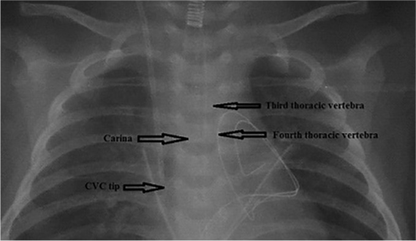
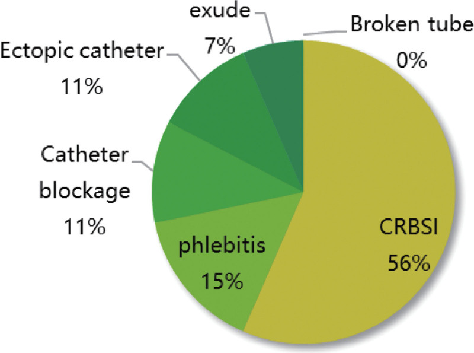
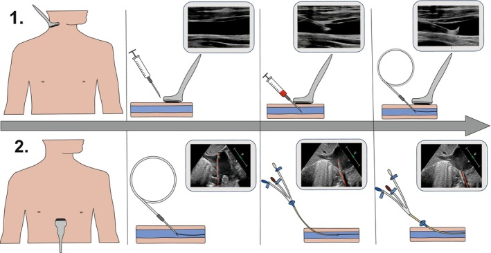
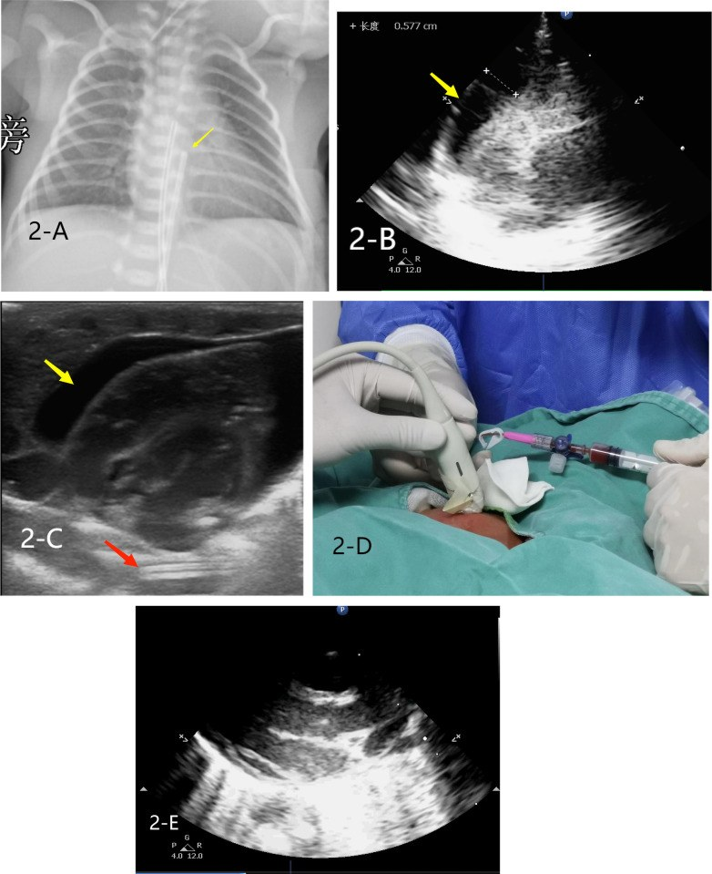

3044 — Catheter tĩnh mạch trung tâm ở trẻ: chọn đường vào, xác nhận đầu catheter và biến chứng sớm
Tags: pattern:ong-day pattern:di-lac-dau-catheter pattern:tran-khi-mang-phoi pattern:huyet-khoi-tinh-mach vung:trung-that vung:nguc protocol:sieu-am-tai-giuong protocol:xq-nguc protocol:ECG-long-trong
Mức chắc chắn (certainty): tổng hợp y văn (literature synthesis) — ghép nghiên cứu tiến cứu định vị đầu catheter bằng siêu âm tim qua thành ngực ở trẻ (Paediatr Anaesth 2025, PMC11883508), mốc X-quang đốt sống ngực T4 cho catheter cảnh trong phải ở nhũ nhi (Sci Rep 2022, PMC9418216), đoàn hệ PICC ở trẻ (Medicine 2023, PMC10545263), đoàn hệ huyết khối liên quan catheter ở trẻ (Transl Pediatr 2022, PMC9732607), ca tử vong do chèn ép tim ở sơ sinh có catheter tĩnh mạch rốn (Front Pediatr 2026, PMC13275663) và kiểm toán biến chứng tức thì của chọc mạch trung tâm ở trẻ (J Indian Assoc Pediatr Surg 2011, PMC3221157). Không có ca do nhóm tự chụp.
Câu hỏi thực hành: bé 3 tháng tuổi, sốc nhiễm khuẩn, cần catheter tĩnh mạch trung tâm (central venous catheter, CVC) để vận mạch + kháng sinh. Sau khi đặt qua tĩnh mạch cảnh trong phải, phim X-quang tại giường cho thấy đầu catheter nằm ngang mức carina. Câu hỏi: như vậy là đúng chưa, có phải chụp lại không, và nếu đầu catheter nằm trong nhĩ phải thì nguy cơ gì? Bài chốt ba quyết định của người đặt đường truyền trung tâm ở trẻ: (1) chọn đường vào nào (cảnh trong / dưới đòn / đùi / PICC / rốn)? (2) xác nhận đầu catheter bằng gì — X-quang, siêu âm tim, hay ECG lòng mạch? (3) biến chứng nào phải lo trong 24–72 giờ đầu? Nối 015 – Ống/dây ICU, 3043 – Hẹp–tắc tĩnh mạch chủ trên sau catheter, 093 – Hội chứng tĩnh mạch chủ trên.
1. Tổng quan bệnh học – cơ chế hình ảnh: vì sao "đầu catheter ở đâu" lại là chuyện sống còn
- Đích giải phẫu: đầu catheter phải nằm ở ngã ba tĩnh mạch chủ trên–nhĩ phải (cavoatrial junction, CAJ). Ba vị trí sai đều có hậu quả riêng:
- Quá cao (trong tĩnh mạch tay đầu, tĩnh mạch cảnh trong, hoặc tĩnh mạch chủ trên đoạn trên): dòng chảy chậm + thành mạch nhỏ → huyết khối và xơ hẹp tĩnh mạch trung tâm; đây chính là cơ chế của 3043.
- Quá sâu (trong nhĩ phải/thất phải): catheter tì vào thành nhĩ → thủng thành, chèn ép tim (tamponade), hoặc gây loạn nhịp khi đầu catheter kích thích nội mạc.
- Lạc hướng (tĩnh mạch bàng hệ): đầu catheter đi vào tĩnh mạch azygos, tĩnh mạch ngực trong, tĩnh mạch nửa đơn hoặc sang bên đối diện — trên phim thẳng vẫn "trông như trong trung thất", nhưng thuốc không vào tuần hoàn trung tâm.
- TẠI SAO trẻ khác người lớn (vật lý + giải phẫu):
- Tĩnh mạch chủ trên rất ngắn ở nhũ nhi; khoảng cách từ chỗ chọc cảnh trong đến nhĩ phải chỉ vài cm. Vì vậy sai số 1 cm đã đủ đưa đầu catheter từ tĩnh mạch chủ trên vào nhĩ phải.
- Đốt sống chưa cốt hóa hoàn toàn nên mốc X-quang phải hiệu chuẩn theo tuổi. Ở nhũ nhi 1–12 tháng, carina nằm ngang đốt sống ngực T4 ở 98% (93/95 ca), chỉ 2% ở T3 (Sci Rep 2022, PMC9418216).
- Khoảng cách đầu catheter–carina ở nhũ nhi: trung vị 10 mm (khoảng tứ phân vị 4–15 mm); 6,3% (6/95) có đầu catheter > 22 mm dưới carina, mức mà tác giả cảnh báo có thể đã chạm hoặc vào nhĩ phải (Sci Rep 2022, PMC9418216).
- TẠI SAO X-quang không đủ để "chốt" vị trí: phim thẳng là hình chiếu 2D; carina chỉ là mốc thay thế (surrogate) cho CAJ, và mốc này lệch theo tư thế, pha thở và độ xoay bệnh nhi. Nghiên cứu dùng siêu âm tim qua thực quản (transesophageal echocardiography, TEE) làm chuẩn vàng cho thấy định vị bằng siêu âm tim qua thành ngực (transthoracic echocardiography, TTE) đạt 91% (136/150 trẻ) đúng CAJ — 96% ở trẻ 0–3 tháng nhưng chỉ 70% ở trẻ 13–14 tuổi (Paediatr Anaesth 2025, PMC11883508). Nghĩa là trẻ càng nhỏ, siêu âm càng có lợi — ngược với thói quen "trẻ nhỏ thì chỉ chụp X-quang".
- TẠI SAO ECG lòng mạch (intracavitary ECG) không thay được phim: khi đầu catheter vào gần nút xoang, sóng P tăng biên độ. Ở 62 trẻ ung thư đặt PICC, 90,32% (56/62) có sóng P đặc trưng, nhưng khi đối chiếu phim ngực chỉ 58,93% trong số đó có đầu catheter đúng vị trí, 39,29% (22/56) vẫn quá sâu, 1 ca ngoài tĩnh mạch chủ trên; 6 ca không có sóng P thì đầu catheter lạc sang tĩnh mạch cảnh trong đối diện (1), tĩnh mạch tay đầu đối diện (2), tĩnh mạch dưới đòn đối diện (1), quá sâu T8 (1), quá nông T4 (1) (Ann Noninvasive Electrocardiol 2022, PMC9296801). Bài học: ECG báo "đã tới gần nhĩ", không báo "đúng CAJ" — vẫn cần xác nhận hình ảnh.

*Phim ngực thẳng của nhũ nhi sau đặt catheter cảnh trong phải: mũi tên chỉ carina, đốt sống ngực T3, T4 và đầu catheter (CVC tip). Carina trùng mức T4 ở 98% nhũ nhi 1–12 tháng; đầu catheter nằm 10 mm (4–15 mm) dưới carina là vùng an toàn, > 22 mm thì có thể đã vào nhĩ phải. Nguồn: Sci Rep 2022 (PMC9418216), CC BY 4.0, nguyên bản.*2. Mẫu hình + chẩn đoán phân biệt theo đường vào và theo thời điểm (gamut)
- Gamut theo đường vào (chọn đường nào trước):
| Đường vào | Ưu điểm | Bẫy riêng | Ghi chú thực hành |
|---|---|---|---|
| Tĩnh mạch cảnh trong (internal jugular, IJ) | Đường thẳng nhất tới CAJ; siêu âm dễ; ít tràn khí hơn dưới đòn | Chọc nhầm động mạch cảnh; đầu catheter vào tĩnh mạch azygos khi đường bên trái | Đường mặc định ở trẻ lớn và nhũ nhi có siêu âm |
| Tĩnh mạch dưới đòn (subclavian) | Cố định catheter tốt, sạch vùng cổ | Tràn khí màng phổi, chọc nhầm động mạch dưới đòn, hẹp tĩnh mạch về sau | Nguy cơ tràn khí cao hơn khi nhiều lần chọc |
| Tĩnh mạch đùi (femoral) | Nhanh, an toàn trong cấp cứu, siêu âm dễ | Huyết khối tĩnh mạch đùi, nhiễm khuẩn vùng tã | Chấp nhận được cho đường truyền ngắn hạn |
| PICC (catheter trung tâm ngoại vi) | Không cần gây mê, dùng dài hạn | Lạc hướng 12,32% (302/2.451), bên phải ăn sâu hơn (30 mm so với 16,5 mm vào tim phải) | Đo chiều dài trước đặt; kiểm tra bằng X-quang/ECG |
| Catheter rốn (UVC/UAC) | Có sẵn ở sơ sinh | UVC quá sâu → chèn ép tim; UAC → co thắt/tắc động mạch | Kiểm vị trí ngay sau đặt, trước khi truyền bất kỳ thuốc nào |
- Gamut theo kiểu lạc hướng (đọc phim X-quang): quá nông (còn trong tĩnh mạch cảnh trong/tay đầu) · quá sâu (nhĩ phải, thất phải) · vào tĩnh mạch azygos (đi xuống dọc cột sống, "móc" ra sau) · vào tĩnh mạch ngực trong (chạy song song bờ xương ức) · sang bên đối diện qua tĩnh mạch tay đầu · thành vòng (loop) trong nhĩ · ra ngoài lòng mạch (vào màng phổi/trung thất).
- Gamut theo thời điểm biến chứng: tại lúc chọc (chọc nhầm động mạch, tràn khí, máu tụ, loạn nhịp) · 24–72 giờ (chèn ép tim do thủng muộn, tràn dịch/tràn máu màng phổi, huyết khối sớm) · 1–4 tuần (nhiễm khuẩn liên quan catheter, huyết khối, hẹp tĩnh mạch).
3. Bảng so sánh phân biệt (ma trận đối chiếu)
| Thực thể (entity) | Hình ảnh điển hình | Chốt vào (rule-in) | Chốt loại (rule-out) | Gợi ý xác nhận |
|---|---|---|---|---|
| Đầu catheter đúng vị trí (CAJ) | Đầu catheter ngay trên nhĩ phải, ~10 mm (4–15 mm) dưới carina ở nhũ nhi; đường đi thẳng, không móc | Đầu catheter ở CAJ trên TTE/TEE; đường đi một trục từ cảnh trong phải | Đầu catheter > 22 mm dưới carina hoặc móc ngược trong nhĩ | TTE có/không bơm nước muối; TEE khi mổ tim |
| Đầu catheter quá sâu trong nhĩ/thất phải | Đầu catheter dưới carina > 22 mm, có thể cong vào thất phải; trên siêu âm thấy đầu catheter trong buồng tim | Đầu catheter trong nhĩ phải/thất phải trên siêu âm + loạn nhịp khi đẩy dây | Đầu catheter còn trong tĩnh mạch chủ trên, thẳng trục | Rút bớt 1–2 cm rồi kiểm lại; ECG lòng mạch hỗ trợ |
| Chèn ép tim do catheter (tamponade) | Dịch màng tim quanh tim, nhĩ phải xẹp thì tâm trương, tụt huyết áp; ở sơ sinh: UVC quá sâu | Dịch màng tim + sốc + đầu catheter trong nhĩ phải | Không có dịch màng tim, huyết áp ổn định | Siêu âm tim cấp cứu; chọc dẫn lưu màng tim |
| Tràn khí màng phổi (pneumothorax) | Khí màng phổi cùng bên chọc, mất dấu phổi, lệch trung thất khi căng giãn | Khí màng phổi + suy hô hấp ngay sau chọc | Phổi nở đủ, không có dải khí | X-quang/ siêu âm phổi tại giường; chọc giải áp nếu căng giãn |
| Huyết khối liên quan catheter (CRT) | Không có dòng trong lòng mạch trên Doppler; catheter không rút được máu; chi sưng | Thiếu dòng + bằng chứng huyết khối trên siêu âm | Dòng chảy đầy đủ, catheter hoạt động tốt | Doppler mỗi tuần; 26,60% (158/594) trẻ có CVC |
| Nhiễm khuẩn liên quan catheter (CLABSI) | Không có dấu hiệu hình ảnh đặc hiệu; ổ nhiễm quanh catheter hiếm khi thấy | Cấy máu dương + sốt không ổ khác | Cấy máu âm, ổ nhiễm khác rõ | Cấy máu 2 vị trí; mô hình dự báo AUC 0,793–0,812 |

*Biểu đồ tần suất biến chứng của PICC ở trẻ trong đoàn hệ 584 trẻ: 7,88% (46/584) có biến chứng. Yếu tố nguy cơ độc lập: chọc nhiều lần (OR 10,115), rỉ máu tại điểm chọc (OR 9,217), thời gian lưu catheter (OR 6,390), dinh dưỡng tĩnh mạch (OR 2,593), loại catheter (OR 8,588). Nguồn: Medicine 2023 (PMC10545263), CC BY-NC 4.0, nguyên bản.*4. Protocol chụp/đặt + ngưỡng xử trí
- Trước thủ thuật: siêu âm đánh giá đường kính tĩnh mạch và vị trí giải phẫu; chọn cỡ catheter theo cân nặng; đo chiều dài dự kiến từ điểm chọc tới CAJ (dùng mốc carina/T4 ở nhũ nhi). Ở trẻ có bệnh tim bẩm sinh, bàn luận trước với phẫu thuật vì đường vào có thể bị hẹp/tắc do catheter cũ (3043).
- Trong thủ thuật: chọc dưới hướng dẫn siêu âm — gộp 13 RCT/1.060 trẻ, siêu âm giảm số lần chọc (MD −1,34 lần) và rút ngắn thời gian chọc tĩnh mạch (MD −4,13 phút), dù tỷ lệ thành công chọc tĩnh mạch không khác biệt có ý nghĩa (RR 1,13; 95% CI 0,98–1,30) (Pediatr Cardiol 2025, PMC12296815). Với động mạch, siêu âm rõ ràng hơn: thành công RR 1,31, thành công lần đầu RR 1,88.
- Xác nhận đầu catheter — 3 mức:
- TTE tại giường (có hoặc không bơm nhanh 5–10 mL nước muối để "thấy dòng"): 91% đúng CAJ, tốt nhất ở 0–3 tháng (96%), kém nhất ở 13–14 tuổi (70%) (Paediatr Anaesth 2025, PMC11883508).
- X-quang ngực sau đặt: đọc carina, T4, khoảng cách đầu catheter–carina (mm); ghi rõ > 22 mm dưới carina = nghi vào nhĩ phải.
- ECG lòng mạch: dùng để hướng dẫn trong lúc đẩy dây, nhưng không đủ để chốt (39,29% ca có sóng P vẫn quá sâu trên phim).
- Ngưỡng xử trí: đầu catheter trong nhĩ phải → rút 1–2 cm rồi kiểm lại; đầu catheter trong thất phải/loạn nhịp → rút ngay; nghi chèn ép tim → siêu âm tim khẩn + dẫn lưu; tràn khí có triệu chứng → chọc giải áp; không rút được máu/không dòng → Doppler tìm huyết khối.
flowchart TD
A[Đặt CVC ở trẻ] --> B{Có siêu âm tim tại giường?}
B -->|Có| C[TTE: đầu catheter ở cavoatrial junction]
B -->|Không| D[X-quang ngực: carina, T4, khoảng cách mm]
C --> E{Đúng CAJ?}
D --> E
E -->|Có| F[Giữ catheter, theo dõi 24–72 giờ]
E -->|Quá sâu hoặc lạc hướng| G[Rút 1–2 cm hoặc đặt lại, kiểm tra lại bằng hình ảnh]
E -->|Nghi chèn ép tim, tràn khí, chảy máu| H[Siêu âm tim và phổi khẩn, xử trí cấp cứu]
- Theo dõi sau đặt: siêu âm Doppler hằng tuần tìm huyết khối — đoàn hệ 594 trẻ cho thấy huyết khối liên quan catheter 26,60% (158/594), tích lũy 15 ngày 30,81% và 45 ngày 46,27%; vận động chi (HR 0,660) là yếu tố bảo vệ (Transl Pediatr 2022, PMC9732607). Bối cảnh chung: huyết khối thuyên tắc tại bệnh viện ở trẻ 4,1% (95% CI 2,9–5,2) gộp 105 bài/20,7 triệu trẻ, với CVC là yếu tố nguy cơ được xác định (Res Pract Thromb Haemost 2024, PMC11470410).
5. Biến thể bình thường và cạm bẫy
- Carina không luôn ở T5 như người lớn: ở nhũ nhi 98% carina ngang T4 — dùng mốc "T5" của người lớn sẽ đọc lệch một đốt, đủ để bỏ qua đầu catheter đã vào nhĩ.
- "Đầu catheter ngang carina" không đồng nghĩa "đúng": ở trẻ nhỏ, 10 mm dưới carina mới là vùng mong muốn; đầu catheter ngang carina thường còn quá nông.
- Catheter trong tĩnh mạch azygos giả dạng tĩnh mạch chủ trên: trên phim thẳng, đoạn cuối cong ra sau và xuống dưới; cần phim nghiêng hoặc siêu âm/CTV để phân biệt.
- Đường bên trái dễ lạc hơn: catheter từ cảnh trong trái phải băng qua tĩnh mạch tay đầu trái — nơi có thể trượt vào tĩnh mạch ngực trong hoặc azygos; luôn đọc lại toàn bộ đường đi, không chỉ đầu catheter.
- Siêu âm tim âm tính giả khi không bơm nước muối: đầu catheter không thấy rõ nếu không tạo "bóng" dòng chảy; bơm nhanh nước muối làm tăng tỷ lệ nhận diện (Paediatr Anaesth 2025, PMC11883508).
- Sơ sinh: catheter rốn là "CVC đặc biệt" — UVC quá sâu vào nhĩ phải có thể gây chèn ép tim; ca minh họa dưới đây có đầu UVC ở bờ trên T7, dịch màng tim và sốc (Front Pediatr 2026, PMC13275663).
- Bẫy "thỏa mãn tìm kiếm": thấy đầu catheter "ổn" là dừng, bỏ qua tràn khí nhỏ ở đỉnh phổi hoặc dải xẹp phổi cùng bên chọc — luôn đọc toàn bộ hai phổi và màng phổi.
6. Tự lượng giá — Blind Quiz
Ca 1 — Nhũ nhi sau đặt catheter cảnh trong phải, kiểm tra vị trí đầu catheter.
- Gợi ý lâm sàng: nhũ nhi 1–12 tháng, đặt catheter cảnh trong phải, chưa truyền thuốc vận mạch.
- Câu hỏi: Đầu catheter nằm ở đâu so với carina? Vị trí này đúng hay sai? Nếu sai thì rút bao nhiêu và kiểm tra lại bằng gì?
Bấm để hiện đáp án (findings + chẩn đoán)
- Dấu hiệu (findings): đầu catheter nằm dưới carina khoảng 10 mm, trong khi carina trùng mức T4; đường đi thẳng, không móc.
- Chẩn đoán (diagnosis): vị trí đúng (vùng CAJ) — trung vị khoảng cách đầu catheter–carina ở nhũ nhi là 10 mm (4–15 mm); chỉ khi > 22 mm mới nghi đã vào nhĩ phải.
- Vì sao: đầu catheter ở CAJ có dòng chảy lớn nhất và ít tì thành → giảm cả huyết khối (quá cao) và thủng/chèn ép tim (quá sâu).
- Nguồn ảnh: Sci Rep 2022 (PMC9418216), CC BY 4.0, nguyên bản.
Ca 2 — Kỹ thuật đặt: siêu âm và xác nhận dây dẫn.

- Gợi ý lâm sàng: trẻ mổ tim bẩm sinh, đặt catheter cảnh trong phải.
- Câu hỏi: Hai hàng hình mô tả hai bước nào? Sau khi có dây dẫn, bước nào xác nhận dây đã vào nhĩ phải mà không cần X-quang?
Bấm để hiện đáp án
- Dấu hiệu (findings): hàng 1 — chọc tĩnh mạch cảnh trong phải dưới hướng dẫn siêu âm (đầu dò linear "hockey-stick"), thấy kim vào lòng mạch; hàng 2 — luồn dây dẫn rồi siêu âm tim qua thành ngực thấy dây dẫn trong nhĩ phải.
- Chẩn đoán (diagnosis): quy trình "chọc bằng siêu âm — xác nhận bằng siêu âm tim"; TTE đạt 91% (136/150) đúng CAJ so với TEE, 96% ở trẻ 0–3 tháng.
- Vì sao: TTE nhìn trực tiếp đầu catheter/dây dẫn trong buồng tim, không phụ thuộc mốc đốt sống như phim thẳng.
- Nguồn ảnh: Paediatr Anaesth 2025 (PMC11883508), CC BY-NC-ND 4.0, nguyên bản (không phái sinh).
Ca 3 — Sơ sinh đột ngột sốc sau đặt catheter tĩnh mạch rốn.

- Gợi ý lâm sàng: sơ sinh non tháng, đang thở máy, đặt UVC; sau đó tụt huyết áp, da tái.
- Câu hỏi: Trên phim và siêu âm có gì? Vì sao đầu catheter "chỉ hơi sâu" lại gây sốc?
Bấm để hiện đáp án
- Dấu hiệu (findings): 2-A — đầu UVC ở bờ trên T7; 2-B — dịch màng tim (mũi tên vàng) đo được 0,577 cm; các panel còn lại là siêu âm tại giường và thao tác chọc dẫn lưu màng tim.
- Chẩn đoán (diagnosis): chèn ép tim do catheter rốn quá sâu — đầu catheter tì vào thành nhĩ phải, gây thủng và tích dịch; xử trí là dẫn lưu màng tim cấp cứu và rút/đặt lại catheter.
- Vì sao: ở sơ sinh thành nhĩ mỏng vài mm, đầu catheter cứng chỉ cần tì nhẹ là thủng; dịch tích trong khoang màng tim không giãn được nên chỉ 5–6 mm đã đủ gây sốc.
- Phản biện nguồn: đây là ca nguyên văn trong bài về siêu âm tại giường ở NICU, không phải nghiên cứu dịch tễ — không dùng để suy ra tần suất.
- Nguồn ảnh: Front Pediatr 2026 (PMC13275663), CC BY 4.0, nguyên bản.
Bài liên quan chéo
- 015 – Ống/dây ICU: đọc vị trí ống nội khí quản, catheter, dẫn lưu
- 3043 – Hẹp–tắc tĩnh mạch chủ trên lành tính sau catheter trung tâm ở trẻ
- 093 – Hội chứng tĩnh mạch chủ trên
- 041 – Tràn khí màng phổi
- 600 – Tổng quan Nhi khoa
Không dùng để chẩn đoán độc lập khi chưa có người hướng dẫn.